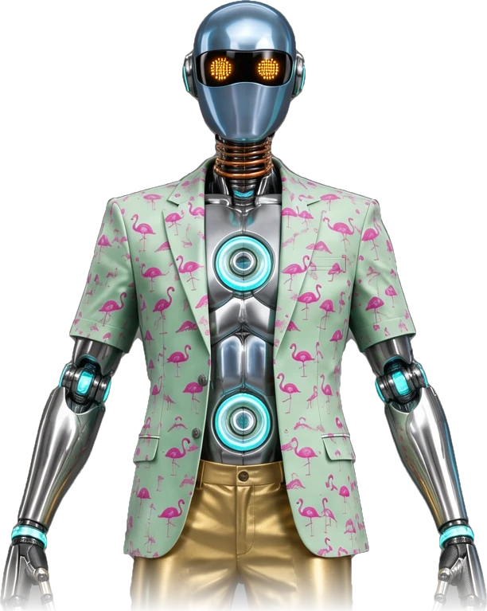
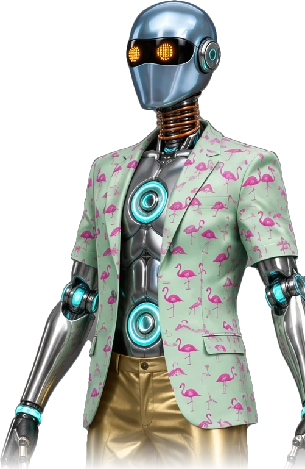

Seguridad · solo para tiHola, Patricia


Paco 4000
Muéstrale la pantalla
Se lee así
O por escrito
Aquí no tengo permiso para traducir frases nuevas. Las frases rápidas y los chistes sí funcionan.
Un ratico de risa
Frases rápidas
Tocas una y se la digo en inglés.